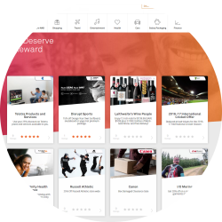
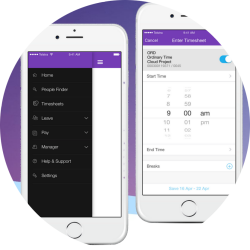
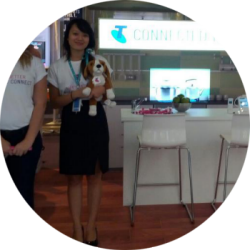
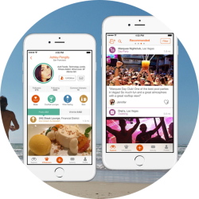

Employment History

Digital Producer
Telstra
May 2015 - Present
The focus of my current role is heavily UX based. I work frequently with internal and external vendors to provide my expertise of UX based design and development. Depending on the requirements, resources and time this may be something as low-touch as providing guidance all the way through to running the UX activities for the project. Major projects I've helped deliver in this role include My Rewards e-commerce site

Communications and Content Admin
Telstra
November 2013 - May 2015
My responsibilities in this role included a heavy component of intranet site design and content management as well as stakeholder management in order to centralise the HR intranet. This role involved implementing a UX based approach to intranet site building and management that was largely missing in the HR intranet. Major projects Me Page, My HR App, My Rewards ISM site

Customer Service Advisor
Telstra
March 2011 - November 2013
As a front of house representative at Telstra I am usually the first point of contact for Telstra customers I pride myself on being able to quickly build rapport with people from all walks of life and providing them with outstanding customer service. An integral part of this role is the ability to problem solve quickly and efficiently to provide timely solutions. It is fast-paced and time management is the key to successfully utilise both my own and a customer's time.

Community Engagement Lead
HeyLets
January 2012 - Decemeber 2012
HeyLets was a start-up company in the process of creating and releasing a social smartphone application. My role there included a focus social media and community engagement, writing copy for both the app and website. Another large focus of the role was organising UX based activities for the app build and promo video, this included drawing up story boards and user journey maps, wireframing, IA activities and prototype testing.